PROG2 Summary
Gradle
Concurrency
Types of Concurrencies
There are multiple types of concurrencies:
- True concurrency On a computer with more multiple cores, each core can run a flow independently
- Interleaving concurrency Each flow gets a slice of time. After that time the flow will be paused and the core will work on another flow. The scheduler controls which core works on which flow
Strategies for Interlaving Concurrency
- Non-Preemptive (cooperative)
The process releases the core voluntarily Tyes: FCFS(First comes, first served), SNP(shortest process next). This was how it was in the olden days
- Preemtive A scheduler can interrupt a process
Program vs Process vs Thread
A program is a sequence of instructions and can consists of multiple processes.
A process executes a program or part of it and can consists of multiple threads. Each process has its own memory, uses IPC (Inter-Process-Communication) to communicate to other processes and switching between processes is expensive.
A thread is part of a process and runs one flow. It shares its memory with the other threads in the same process and switching between thread is cheap.

Java-Concurrency
Thread
Thread.sleep()doesn't gurantee that sleep doesn't wake up early or lateObject.yield()will advice the scheduler to release the thread, but there is guarantee that the thread will be suspened- With
Thread.currentThread()one can get the thread which runs the current thread Thread.stop(),Thread.suspend()andThread.resume()are depricated and potentialy unsafe
public static void main (String[] args) {
System.out.println("START: main");
Thread java = new JoinThread("Java");
Thread fiji = new JoinThread("Fiji");
java.start();
fiji.start();
System.out.println("Wait for theads..");
try {
java.join(); // blocks until java ends
fiji.join(); // blocks until fiji ends
} catch (InterruptedException e) {
System.out.println("Interrupted");
}
System.out.println("DONE main");
}
Lifecycle of a Thread

A Thread is considered "alive" and Thread.isAlive() will return true, when the Thread is either ready, running oder suspended (the blocks with the dotted outline). This means that run needs to start running before the Thread is alive.
Executor Framework
// Example of a Sheduled Executor
public static void main(String[] args) {
ScheduledExecutorService scheduledExecutor = Executors.newScheduledThreadPool(2);
scheduledExecutor.execute(new ScheduledTask(0, System.currentTimeMillis()));
Future<?> future = scheduledExecutor.submit(new ScheduledTask(0, System.currentTimeMillis()));
scheduledExecutor.schedule(new ScheduledTask(1, System.currentTimeMillis()), 4, TimeUnit.SECONDS);
scheduledExecutor.scheduleAtFixedRate(new ScheduledTask(2, System.currentTimeMillis()),4,3,TimeUnit.SECONDS);
scheduledExecutor.scheduleWithFixedDelay(new ScheduledTask(3, System.currentTimeMillis()),2,3,TimeUnit.SECONDS);
try {
TimeUnit.SECONDS.sleep(20); // waiting for 20s
} catch (InterruptedException e) { }
scheduledExecutor.shutdown();
}
private static record ScheduledTask(int id, long starttime) implements Runnable {
@Override
public void run() {
System.out.println("Executing Task " + id +
" at " + (System.currentTimeMillis()-starttime) + " ms after start " +
" in Thread : " + Thread.currentThread().getName());
}
}
Executor Service
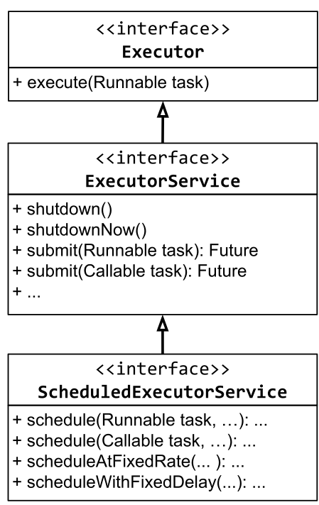
An Executor just promises to execute a given task.
An ExecutorService extends Executor to allow to shutdown the Executor and to track the progress and the state of a task. The shutdownNow() method uses Thread.interrupt() under the hood and is thus not deprecated.
The ScheduledExecutorService extends the ExecutorService to allow a task to be scheduled. The method signitures of the new methods are:
schedule(Runnable task, long delay, TimeUnit unit),scheduleAtFixedRate(Runnable task, long initialDelay, long period, TimeUnit unit)scheduleWithFixedDelay(Runnable task, long initialDelay, long delay, TimeUnit unit)
Thread Pools
A thread pool uses multiple threads which are reused for multiple tasks. Thread pools usually use a queue to hold the tasks to be executed.
A special kind of thread pool is a Blocking Queue, which when it's full, will reject newly submitted tasks.
Most Executor Services use thread pools underneath.
Different Executors
| Executor Name | Description |
|---|---|
Executors.newSingleThreadExecutor() |
Creates an Executor which only uses one thread |
Executors.newFixedThreadPool(int numOfThreads) |
Creates an Executor which has the given number of threads. Those thread will be reused |
Executors.newCachedThreadPool() |
Creates new threads as needed. It will retain Threads for an amount of time (approx. up to 60s) and will stop it after. |
Executors.newScheduledThreadPoool(int numOfThreads) |
Creates a new scheduled thread pool with the given number of threads. |
Executors.newSingleThreadExecutor() |
Creates a new scheduled executor with a single thread |
Callable and Futures
A Callable will return a result or an exception and can also be submitted to an ExecutorService and a Future<V> will be returned.
public static void main(String[] args) throws InterruptedException, ExecutionException, TimeoutException {
ExecutorService service = Executors.newSingleThreadExecutor();
Future<String> future = service.submit(() -> "Hello world");
String result = future.get(); // waits until the future completes
result = future.get(1, TimeUnit.SECONDS); // will throw TimeoutException after 1 second
future.cancel(<mayInterruptIfRunning>); // will cancel the future
future.isDone(); // returs if the future is done
future.isCancelled(); // returns if the future was cancelled
}
Patterns
Wait for all Tasks to finish
List<Future<?>> futureList = executorService.invokeAll(taskList);
for(Future<?> future : futureList) {
future.get(); // wait for each future
}
Wait for the fastest task to finish
String result = executorService.invokeAny(taskList);
/*
The result of the task which completed first, is returned
*/
Share Data between Multiple Threads
Atomic
Use the atomic data types, like AtomicBoolean, AtomicInteger, AtomicLong, AtomicReference, AtomicIntegerArray, AtomicLongArray or AtomicReferenceArray.
private static class Account {
private final int id;
private AtomicInteger balance;
public Account(int id, int initialAmount) {
this.id = id;
this.balance = new AtomicInteger(initialAmount);
}
public int getId() { return id; }
public int getBalance () {
return balance.get();
}
public void setBalance(int amount) {
this.balance.set(amount);
}
public void transferAmount (int amount) {
this.balance.addAndGet(amount);
}
}
Synchronized
class Account {
private int balance;
public synchronized void transferAmount1(int amount) {
this.balance += amaount;
}
public void transferAmount2(int amount) {
synchronized(this) {
this.balance += amaount;
}
}
public synchronized static staticLock1() {
//do stuff
}
public static staticLock1() {
synchronized(Amount.class) {
// do stuff
}
}
}
Never call an other synchronized method which uses a different object. This can cause a dead lock.
Monitor
A Java object can be used as a locked.
class FooBar {
private Object monitor;
public void test() {
synchronized(monitor) {
// waits for the monitor to be called with monitor.notify() or monitor.notifyAll()
monitor.wait();
}
}
}
Object.wait() blocks until Object.notify() or Object.notifyAll() is invoked on the same monitor object. notify() only wakes up one waiting Thread while notifyAll() will wake up all waiting threads.
wait() releases the monitor object.
Types of Synchronization
Mutual Exclusion
Mutual Exclusion means that only only thread can access a shared resource at a time. This usually means, that a section of code needs to be locked (eg. with synchronize) until the thread is done with that code.
Conditional Synchronization
Conditional synchronization is needed when one thread waits for an event to happen in another thread. This is basicly the Producer-Consumer "Pattern". The order of events or operations is critical.
Producer-Consumer
The producer produces some data which can be consumed by the consumer. The consumer tries to access the resource. If it is already ready, then it can just continue. If not it will wait() for the producer to notify() its monitor after which it can access the resource.
The producer thread might needs to throttle itself to avoid loosing results when no consumer can consume them.
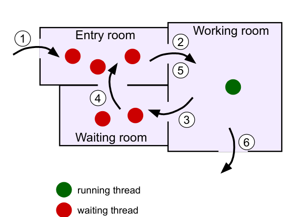
Here is an example for a consumer-producer example: The while loop is necessary because when the thread calls wait() it releases the monitor the synchronize block and an other thread can enter the synchronize block and call wait().

Synchronized Queue
With a queue the problem of the consumer and producer can be abstracted into a separate class to make it less brittle. Implementing the following becomes trivial:
- The producer fills the queue with data
- The consumer retrieves the data from the queue if available
- The consumer waits only if the queue is empty
- The producer waits when the queue is full
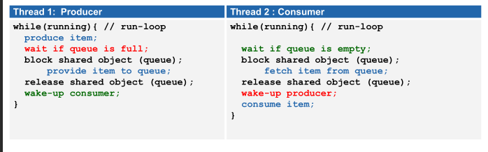
Locks and Conditions
A Lock is like a monitor object but instead of using synchronize the methods lock() and unlock() are used (in a try-finally-block).
Additionally Conditions can be created with Lock.newCondition(). A condition is connected to its lock and can only be interacted with when its lock is locked. A Condition has await(), signal() and signallAll(), which behaviour like Object.wait(), Object.notify() and Object.notifyAll(). The advantage of Conditions is, that each lock can have multiple conditions.
With ReentrantLock.hasWaiters(Condition) can be checked, if a thread currently waits for a condition.
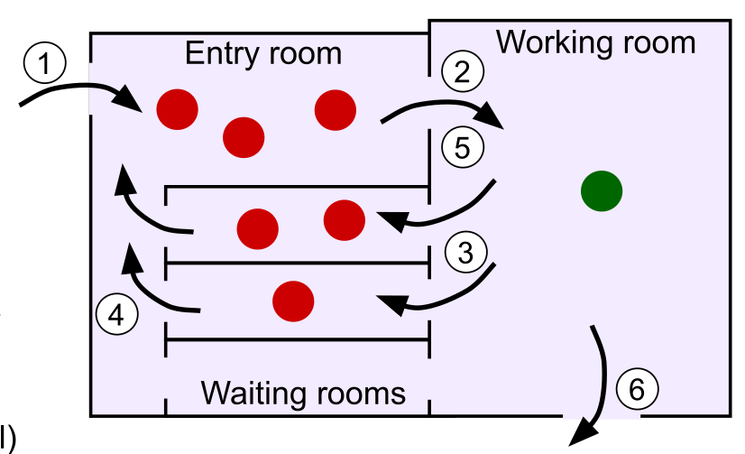
public class ConditionalSyncQueue<E> {
private Lock mutex = new ReentrantLock();
private Condition notEmpty = mutex.newCondition();
private Condition notFull = mutex.newCondition();
private LinkedList<E> queue = new LinkedList<E>();
private int capacity = 5;
public void add (E item) throws InterruptedException {
mutex.lock(); // enter critical section
try { // condition 1: queue not full
while(queue.size() >= capacity) {
notFull.await();
}
queue.addLast(item);
notEmpty.signal();
} finally {
mutex.unlock(); // exit critical section
}
}
public E remove() throws InterruptedException {
E item = null;
mutex.lock(); // enter critical section
try { // condition 2: queue not empty
while (queue.empty()) {
notEmpty.await();
}
item = queue.removeFirst();
notFull.signal();
} finally {
mutex.unlock(); // exit critical section
}
return item;
}
}
ReadWriteLocks
A ReadWriteLock is like a Lock but it provides 2 Lock instances:
- A write lock: When locked, neither locks are lockable anymore
- A read lock: When locked, the write lock won't be lockable
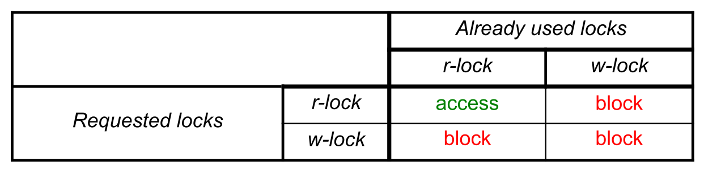
The ReentrantReadWriteLock has the methods readLock() and writeLock() which return the respective lock instance.
This helps reduce the performance impact of synchronizing.
Problems of lack of Synchronization
Lost Update
A lost update happens when an write/update was overridden by another thread.
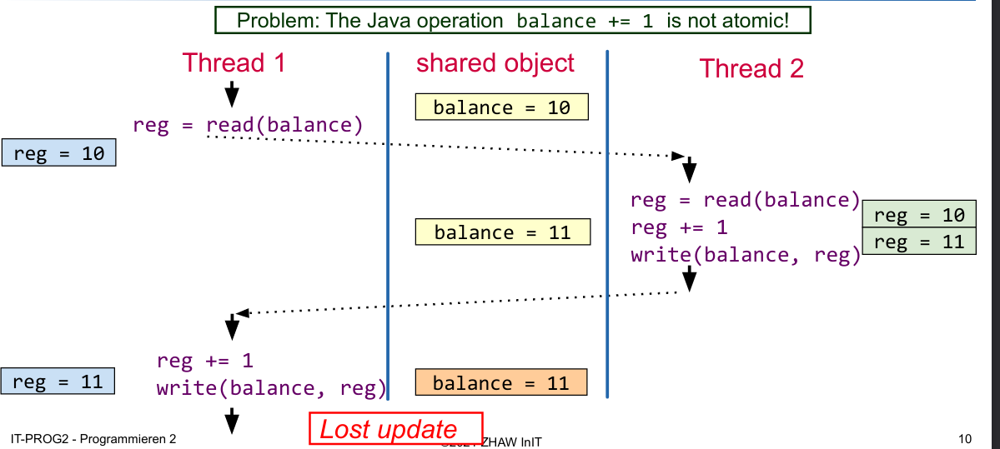
Deadlocks
A deadlock occurs when two threads wait for a resource, which is locked by the other thread. It can only occur when all of the following conditions are meth:
- Mutual Exclusion: Each resource is available only once
- Hold and Wait Condition: A thread which already blocks a resource, claims additional resources
- No Preemption: A blocked resource cannot be taken away by the OS
- Cyclic waiting Conditions: A chain of processes exists which are waiting for a resource, which is blocked by a successor in the chain
How to avoid Dead Locks
Generally avoiding shared resources will avoid dead locks as well. This however isn't always possible. In those cases, insure that a resource is always locked in the same order,
public static void transfer(Account from, Account to, int amount) {
boolean isLower = from.getId() < to.getId();
Account lowerAccount = isLower ? from : to;
Account higherAccount = !isLower ? from : to;
synchronized( lowerAccount ) {
synchronized( higherAccount ) {
from.transferAmount(-amount);
to.transferAmount(amount);
}
}
}
Another solution is to program a special case for one of the resource which will access the resources in the reverse direction (see Dining Philosophers)
Dining Philosophers
There are 5 Philosophers. Each philosophers can either eat or think. For eating a philosopher needs two forks, but there are only 5 forks in total, so not everybody can eat at the same time.
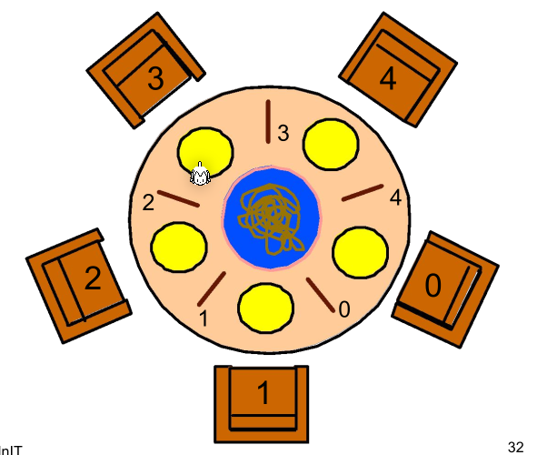
A naive solution would first let the philosophers take the right and then the left fork. This would result in everybody holding a fork in the right hand and waiting for a fork to be available resulting in a dead lock.

To prevent this cyclic waiting condition the abstract can be change to always take and release two forks as one atomic action. The situation above should never happen.
A second solution is to change the behavior of one philosopher to first take the left and then the right fork.
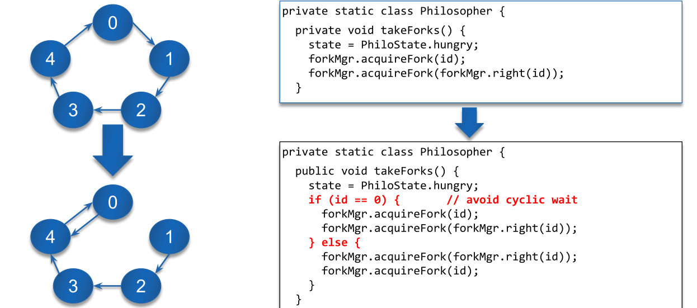
GUI
Scene Graph
A scene Graph is a cycle free graph of nodes. It contains one root node.
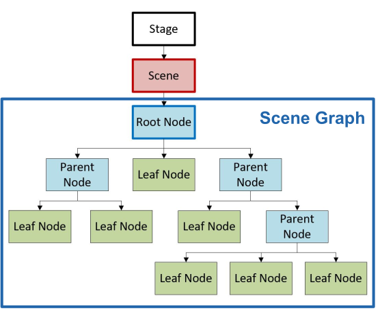
Panes
-
Group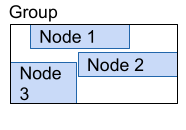 All children keep their size and it is just large enough to contain all children
-
Region Is the base class of all panes and controlls and defines minimum, maximum and desired size
-
Pane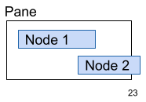 The size of the pane and the layout of its children can be manually set; clipping is possible
-
HBox/VBox Aligns the children horizontally or vertically 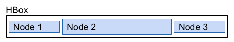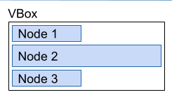
-
BorderPane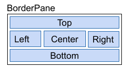 Defines 5 regions. Nodes are added by
setCenter(Node),setLeft(Node), ... -
GridPane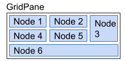 The children are aranged in a table. Nodes are added with
add(Node, column, row) -
FlowPane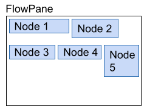 Automaticly aranges nodes in a new row/column, when the size of the pane is filled.
-
AnchorPane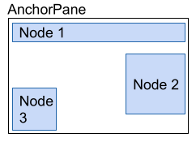
Nodes can be anchored to multiple edges. This allows for a flexible layout. A node is added with getChildren().add(Node) and can be attached to an edge with setTopAnchor(Node, distance), setLeftAnchor(Node, distance), setBottomAnchor(Node, distance) and setRightAnchor(Node, distance).
- TilePane 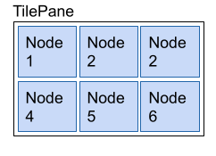
Every Node gets the same amount of space in a grid. Like in a
FlowPane, nodes are wrapped to the next line if the size of the pane is filled. Either a max tile size is set or the biggest child is used as a reference. Nodes are added withgetChildren().add(Node).
Menus
The root is MenuBar which contains Menus (contain other Menus oder MenuItems) or MenuItems (contains text and/or graphics), like CheckMenuItem or RadioMenuItem
MenuBar menuBar = new MenuBar();
Menu fileMenu = new Menu("File");
menuBar.getMenus().add(fileMenu);
MenuItem quitMenuItem = new MenuItem("Quit");
fileMenu.getItems().add(quitMenuItem);
Image quitImage = new Image(getClass().getClassLoader().getResourceAsStream("quit-icon.png"));
quitMenuItem.setGraphic(new ImageView(quitImage));
quitMenuItem.setAccelerator(KeyCombination.keyCombination("ESC"));
quitItem.setOnAction(new EventHandler<ActionEvent>() {
public void handle(ActionEvent e) { Platform.exit(); }
});
// or as lambda expression
quitMenuItem.setOnAction(e -> Platform.exit());
CheckMenuItem bookMenu = new CheckMenuItem("Book");
bookMenu.setSelected(true);
fileMenu.getItems().add(bookMenu);
Events
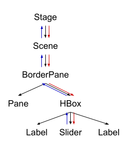
An event has two phases:
- Event Capturing Phase:
The event is passed up from the origin node to the stage. On each node, its
EventFilteris invoked - Event Bubbling Phase
The event is passed back up from the stage to the origin node. On each node, its
EventHandleris called.
An event handler can be added to a node via their respective methods:
Button button = new Button("test");
button.setOnAction((ActionEvent event) -> {});
button.setOnAction(new EventHandler<ActionEvent> {
@Override
public void handle(ActionEvent event) {}
});
button.setOnMouseClicked((MouseEvent event) -> {});
All event handlers are EventHandler<? extends Event>
Demo App
public class App extends Application {
@Override
public void start(Stage primaryStage) throws Exception {
FXMLLoader loader = new FXMLLoader(getClass().getResource("test.fxml"));
Parent parent = loader.load();
Scene scene = new Scene(parent);
stage.setTitle("Test");
stage.setScene(scene);
stage.setMinWidth(400);
stage.setMinHeight(600);
// if this is a new stage
stage.initOwner(parentStage);
// disables events for owner windows only
stage.initModality(Modality.WINDOW_MODAL);
// disables events for all app windows
stage.initModality(Modality.WINDOW_MODAL);
stage.show();
// or stage.showAndWait(); to block until modal window is closed
// create new Stage (primaryStage= new Stage()) to open a new window
}
}
public class Controller {
@FXML
private BorderPane rootPane;
@FXML
public void initialize() {
rootPane.setStyle("-fx-bakground-color: red;");
rootPane.setLayoutX(0);
rootPane.setLayoutY(0);
}
}
MVC
Model: Contains the data with the domain logic, but it has to be independent from the View-Classes.
View: The UI components which render the data. The view doesn't call the model directly (usually), but it knows about the types of the model (for example via generics).
Controller: The glue between the model and the UI. It listens to events from the UI and calls the model accordingly

The benefits of this pattern are:
- Independent development and testing of model and UI
- Its possible to have multiple views and controllers for one model
- Changes to the UI or model are far easier
FXML
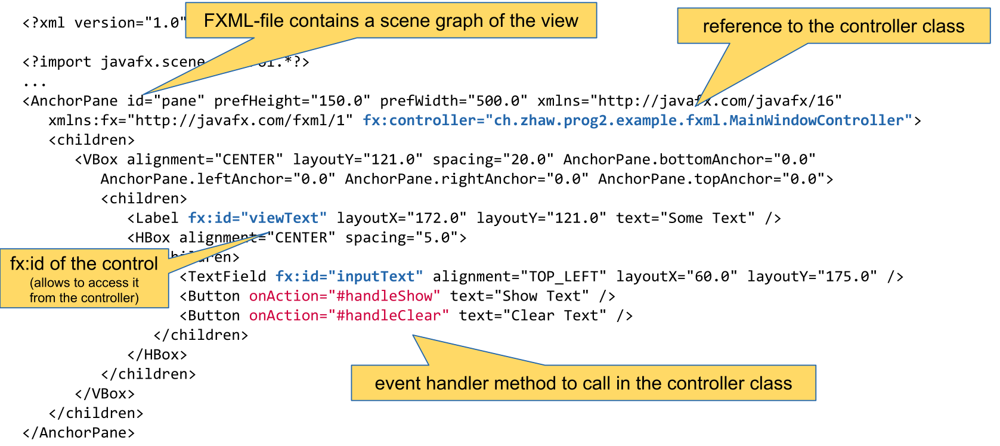
Properties and Bindings
IntegerProperty prop = new SimpleIntegerProperty(3);
prop.addListener(new ChangeListener<Number>() {
public void changed(ObservableValue<? extends Integer> o, Number oldVal, Number newVal) {}
});
prop.getValue(); // returns the value
prop.setValue(4); // sets the value
prop.bind(otherProp); // binds the prop to the otherProp
prop.bindBidirectional(otherProp); // binds the two properties bidirectionally
Initialize
The method initialize() can be annotated with @FXML and will be called when the controller is initialized.
Testing
Testing is the process of executing a programm with the intent of finding errors.
Principles of Testing
- Specification of Input and Output For each test case the input and the expected output should be specified.
- Separation of Creation and Testing The developer of the code shouldn't write the test for their code.
- Completeness of Tests Code should always be tested for valid inputs and invalid tests. The natural tendency is to test only the valid inputs.
- Testing is an investement Test cases are reused
- Error Cluster If an error is found in a section of code, the probability of more errors increases. Error-prone Sections should be well tested.
Mock Testing
Mock testing is used when a class with dependencies should be tested. The dependencies can be mocked that it implements the minimal of behaviour to function. This allows to only test the class under testing and not its dependencies.
Different Mocking Types
There are different type of mock classes.
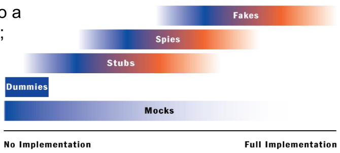
Dummy
Dummies are objects which are never used. They fill parameter lists of methods, if those methods would throw NullPointerExceptions otherwise.
Stubs
A stub is the minimal implementation of an interface. Void method usually don't do anything and methods with a return value will usually return a hard coded value.
Here is an example.
public class EmailStub implements EmailServer {
public void sendMail(String mailTextt) {
// do nothing
}
public String receiveMail() {
return "Mail received"; // a hard coded value
}
}
An EmailDummy would return null in receiveMail() because it is just a dummy.
Spies
Spies are similar to stubs, but record which members were invoked. This information can be checked in unit tests.
Fakes
A fake will implement a class similar to the production class but with shortcuts (e.g. an in-memory database)
Mock
A test double which implements the functions in away which we expect for the test. Depending on how they are implemented, they can function as a dummy, stub, spy or a fake.
Mock testing is usually split in multiple phases:
- Create: The mock object is created
- Specify: The expected behaviour is specified
- Use: The mock object is used in a normal unit test
- Verify behaviour: The mock object is verified
public class OrderInteractionTester extends MockObjectTestCase {
private static String TALISKER = "Talisker";
public void testFillingRemovesInventoryIfInStock() {
// configuration
Order order = new Order(TALISKER, 50);
Mock warehouseMock = new Mock(Warehouse.class);
// expectations
warehouseMock
.expects(once())
.method("hasInventory")
.with(eq(TALISKER),eq(50))
.will(returnValue(true));
warehouseMock
.expects(once())
.method("remove")
.with(eq(TALISKER), eq(50))
.after("hasInventory");
//exercise
order.fill((Warehouse)warehouseMock.proxy());
//verify
warehouseMock.verify();
//verify expected behavior
assertTrue(order.isFilled()); //verify state
}
}
Blacking-Box vs White-Box Testing
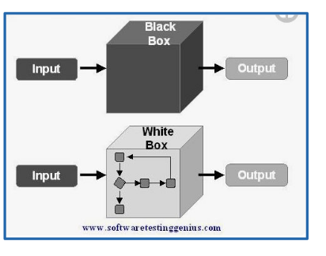
In black-box testing (or state testing), only the public interface is known. No assumptions is done about the internal implementaiton. Usually stubbing can be used.
In white-box testing (or behaviour testing) the inner working of the class is known and tested. Here, usually mocking can be used.
Mockito
Create a Mock
Either the method mock(Class<?> clazz) is used or the annotation @Mock for which MockitoAnnotations.openMocks() needs to be called in the setup method.
Mock Behaviour
To mock the return value of methods, the when(<method>).thenReturn(<value1>).thenReturn(<value2>) pattern can be used. When the returned value should have a bit more logic than a constant value, the thenAnswer(Answer<T>) method can be used (see example below).
To mock an exception throwing method, the doThrow(<exception>).when(<mockObj>).<method>(<args>) pattern needs to be used. The method must support throwing the exception in case of an checked-exception.
There are multiple matchers available, which can match an argument of a mocked method:
- Any-matchers:
anyInt(),anyString(),any(Class<?> clazz), ... - String-matchers:
startsWith(String),endsWith(String),contains(String), ... - Object-matchers:
isNull(),isNotNull(), ... - Compare-matchvers:
eq(T obj), ... - Custom-matchers:
argThat()...,intThat(...), ...
Person mock = mock(Person.class);
// mock return values
when(mock.getName()).thenReturn("Hans").thenReturn("Max");
doReturn(10).doReturn(20).when(mock).getAge();
when(mock.getMessage(anyString())).thenAnswer((InvocationOnMock invocation) -> "hello world");
// mock exception throwing
doThrow(new IllegalArgumentException()).when(mock).setAge(-1);
When an method isn't mocked, then a value is still returned based on the return value:
- The return value is an primitive: The "zero"-primitive is returned
- The return value is a primitive wrapper class: Then the "zero"-primitive of the wrapper class is returned
- The return value is a collection: The return value is an empty collection
- For the toString() method an description of the mock is returned
- For
Comparable#compareTo(T other)returns zero if the references are equal, else a non-zero value - Else:
nullis returned.
Verify Behaviour
Mockito can verify that a method was invoked. For this, the pattern verify(<mock>).<method>(<args>) can be used. With an additional argument of verify, further conditions can be specified. With verify(<mock>, never()).<method>(<args>) can be checked that the method was never invoked. Other condition includes never(), times(int), atLeastOnce(), atLeast(int), atMost(int), timeout(int milliseconds) (that the method is invoked in the given timeout). These conditions can be combined like timeout(10).times(2)
Mockito can also verify the order in which methods were called. For this a InOrder object can be created with inOrder(<mockObj>). On the InOrder object, the verify(...) method can be used.
verify(mockedHalf).contractAtrium();
verify(mockedHalf, times(2)).isAtrioventricularValveOpen();
verify(mockedList, never()).add("ZHAW");
InOrder inOrder = inOrder(singleMock);
// Verify the order
inOrder.verify(singleMock).add("second");
inOrder.verify(singleMock).add("first");
Spies
A spy object is created based on a "real" object. All methods are delegated to this object, but the behaviour of methods can be selectively changed (similar with mocks) and it can verify than methods were called. It can be created with spy(Object obj) and can be used like a mock. Similar to @Mock the @Spy annotation can be used instead of spy(...) (MockitoAnnotations.openMocks() needs to be called in the setup method).
List list = new LinkedList();
// create a spy on the real object instance
List spy = spy(list);
// stub the size() method
when(spy.size()).thenReturn(100);
// add() is not stubbed. So it will use the real method
spy.add("one"); spy.add("two");
assertEquals("one", spy.get(0));
assertEquals(100, spy.size());
IO
Serializing
In order for an object to be serializable in needs to implement the marker interface Serializable.

Fields can be marked with transient (private transient Date someDate;) if they shouldn't be serialized. This can be usefull for serializing classes which contain unserializable classes (like dates, file descriptor, network sockets or db connections).
Employee harry = new Employee("Dirty Harry", 50000, LocalDate.of(1967, 3, 11));
Manager boss = new Manager("Walter Smith", 80000, LocalDate.of(1950, 12, 4)); // Manager is extending Employee
boss.setAssistant(harry);
// Save (serialize) two objects to the file empolyee.dat
try (ObjectOutputStream out = new ObjectOutputStream(new FileOutputStream("employee.dat"))) {
// objects are written in the given order to the file
out.writeObject(harry); // write object Dirty Harry
out.writeObject(boss); // write object Walter Smith
out.writeInt(12); // write value of primitive type int
}
// Load (deserialize) two objects from the file employee.dat
try (ObjectInputStream in = new ObjectInputStream(new FileInputStream("employee.dat"))) {
// number and order of reading the objects must match, also the type must be compatible (match or super class)
Employee e1 = (Employee) in.readObject(); // object for Dirty Harry
Employee e2 = (Employee) in.readObject(); // object for Walter Smith
// e2.getClass().getName() would return type Manager
int count = in.readInt(); // read primitive type int
}
IO Streams
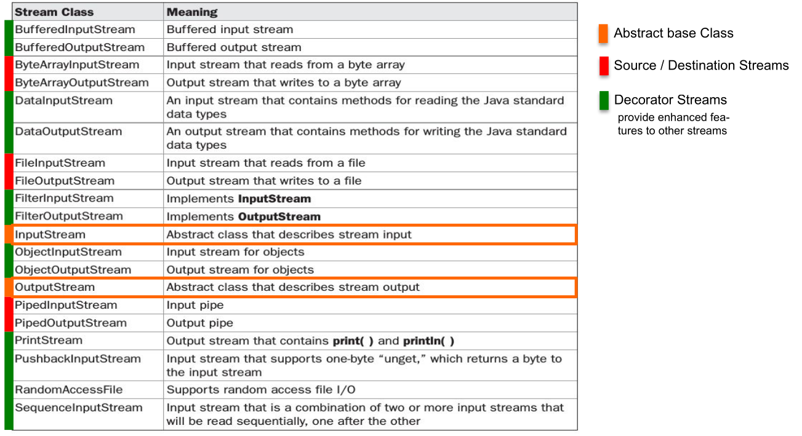
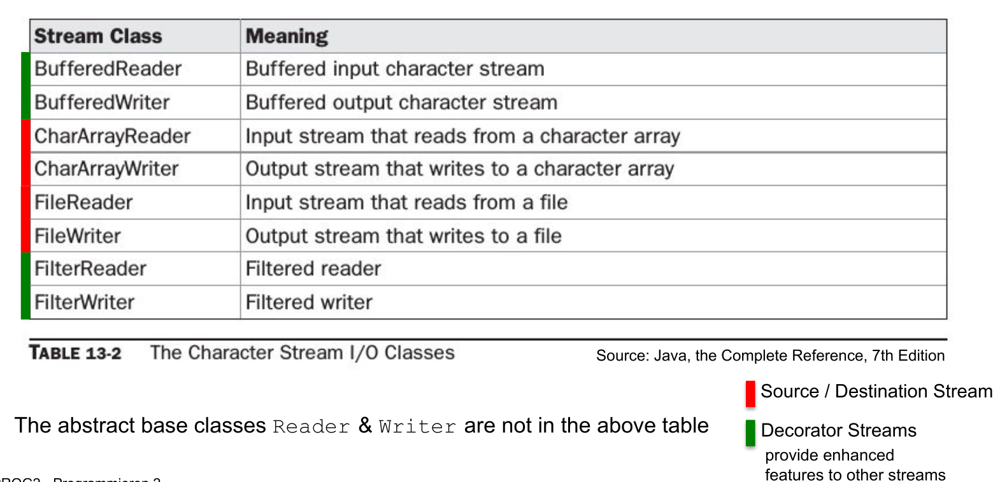
A byte stream can be converted to a char stream with InputStreamReader and OutputStreamWriter respectively.

InputStream and Readers usually allow to skip a number of bytes/chars with skip(long n). However, OutputStreams and Writers don't allow removing or inserting into a file, only appending (FileOutputStream(File file, boolean append)) or replacing is supported.
RandomAccessFile
Allows reading from anywhere in the file, not just skipping bytes like an InputStream. This can be done with the seek(long pos) or the skipBytes(long n) methods.
// create file and write some data into it
File f = new File("randomaccessfile.txt");
try (BufferedWriter bw = new BufferedWriter(new FileWriter(f,true))) {
for(int i=2; i<=10; i++) {
if( i%2 == 0) {
bw.write(Integer.toString(i)); bw.newLine();
}
}
}
try (RandomAccessFile randomFile = new RandomAccessFile(f,"rw")) { // read-write mode
for(int i=1; i<=5; i++){
randomFile.seek(randomFile.length()); // set file pointer to end of file (EOF)
randomFile.writeBytes(Integer.toString(i)); // append "1","2","3","4","5" at EOF
}
}
try (RandomAccessFile randomFile = new RandomAccessFile(f, "r")) { // read-only mode
int i = (int) randomFile.length(); // get length of file in bytes
System.out.println("Length: " + i);
randomFile.seek(i-3); // set file pointer to EOF-3 bytes
for(int ct = 0; ct < 3; ct++){
byte b = randomFile.readByte(); // read byte(s)
System.out.println((char)b);
}
}
Charset
An instance of Charset can be either obtained by Charset.forName(<name>), Charset.getDefaultCharset() or Charset.getAvailableCharsets(). Alternatively StandardCharsets.UTF_8 can be used.
Logger
Each Logger instance has a list of Handlers. A Handler can be used by multiple Loggers and handles the storing of the logging messages (like writing it to a file, or displaying in the console). Both the Logger and the Handler have a Level. And each will only forward messages which have a level higher than their configured level.
The possible levels are: SEVERE(1000), WARNING(900), INFO(800), CONFIG(700), FINE(500), FINER(400), FINEST(300).
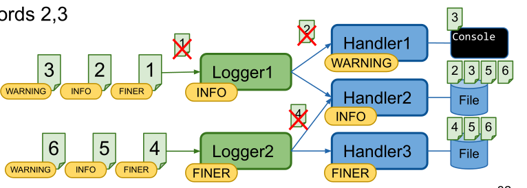
The following properties file is an example logging configuration.
## configure handlers
java.util.logging.ConsoleHandler.level = ALL
## File handler configuration
## see https://docs.oracle.com/en/java/javase/11/docs/api/java.logging/java/util/logging/FileHandler.html
java.util.logging.FileHandler.level = ALL
# %g = generation number, %u = unique number to resolve conflicts
java.util.logging.FileHandler.pattern = log-%g-%u.log
# use SimpleFormatter instead of default XMLFormatter
java.util.logging.FileHandler.formatter = java.util.logging.SimpleFormatter
java.util.logging.FileHandler.encoding = UTF-8
# max log file size in byte before switching to next generation (=1kB); 0 = unlimited
java.util.logging.FileHandler.limit = 1024
# max number of generations (%g) before overwriting (5 -> 0..4)
java.util.logging.FileHandler.count = 5
java.util.logging.FileHandler.append = true
## configure Formatter (see SimpleFormatter documentation)
java.util.logging.SimpleFormatter.format = [%1$tc] %4$s: %5$s {%2$s}%6$s%n
## configure default log level (for all loggers, if not overwritten below)
.level = INFO
## configure root logger ""
handlers = java.util.logging.ConsoleHandler
level = INFO
## Application specific logger configuration
# loggers starting with "ch.zhaw.prog2.io" -> write to console and file and do not forward to parent handlers
ch.zhaw.prog2.io.level = FINE
ch.zhaw.prog2.io.handlers = java.util.logging.FileHandler, java.util.logging.ConsoleHandler
ch.zhaw.prog2.io.useParentHandlers = false
# logger for class ch.zhaw.prog2.io.LogConfiguration
ch.zhaw.prog2.io.LogConfiguration.level = FINEST
A log configuration can be loaded anytime and all already existing loggers will be updated.
InputStream logConfig = this.getClass().getClassLoader().getResourceAsStream("log.properties");
LogManager.getLogManager().readConfiguration(logConfig);